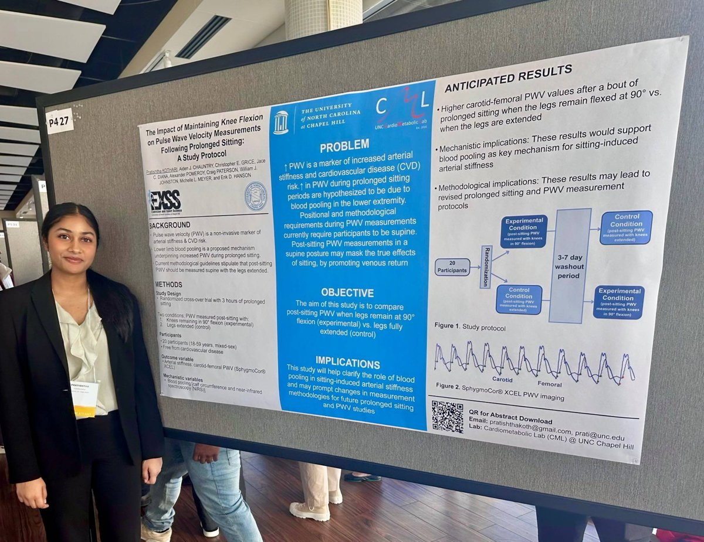
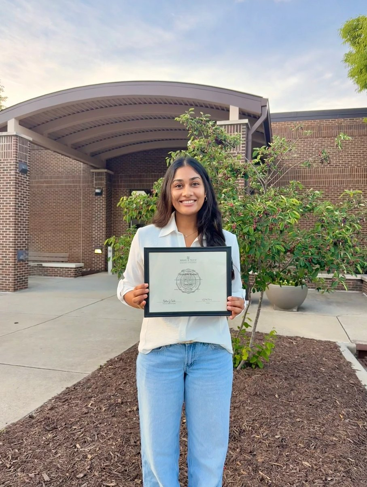

Biomedical Engineering · UNC Chapel Hill
“A dissection based study of female cadavers suggests that current anatomy texts do not accurately display female perineal anatomy.”
— O'Connell et al., Journal of Urology, 1998
In 1998, Helen O'Connell and colleagues dissected female cadavers and found that the clitoral erectile tissue extends far beyond the visible glans. It wraps around the urethra and distal vaginal wall in an arrangement that standard anatomy texts had left out. If a structure of this size could stay inaccurately described until 28 years ago, then smaller structures, such as the cells that rebuild the endometrium each menstrual cycle, may also remain incompletely characterized. That gap between what exists in the body and what has been discovered is what draws me to reproductive health research. In 2022, endometriosis affected roughly 11% of women yet received about $27 million of the NIH's $45 billion research budget. Funding determines how many studies can investigate a disease's mechanisms, so an underfunded condition yields fewer identified mechanisms and therefore fewer targets for a treatment to act on. Intrauterine adhesions show the same pattern in a different form. Scar tissue inside the uterine cavity can prevent an embryo from implanting. The standard treatment, surgically removing the scar, does not restore the functional endometrium beneath it, so the adhesions can re-form. In both conditions, treatment research is stagnant and mechanistic data hits a roadblock, which suggests that new anatomical and cellular findings are a precondition for treatments that do not yet exist.
Biomedical engineering is the discipline that I hope to study to turn those findings into new interventions. Once researchers measure how a drug moves through a tissue and how quickly the body clears it, they can design an implant that releases the drug at a controlled rate for months instead of requiring a daily dose. Because a daily regimen depends on the patient remembering every dose, a device that removes that daily decision also removes one point at which treatment can fail. Developing interventions depends on research methods, because methods determine whether a finding can support an intervention's reliability and validity. In the CardioMetabolic lab at UNC, I ran enzyme-linked immunosorbent assays to measure hormones such as insulin and aldosterone, and I collected cardiovascular data from human participants. Learning how a protocol controls for confounding variables showed me that a result can justify an intervention only when the study design is foundational. Even then, a finding typically reaches patients only after someone interprets its implications and builds a device or policy around it. For that reason, I view interpretation as the step where research becomes public benefit.

Interpreting results this carefully also requires patience, since a single finding can take months of repeated trials to confirm. Training in an Indian classical dance, Bharatanatyam, taught me the importance of specificity and discipline. The form is built on fixed rules and repetition, so a movement I practiced often improved only months after I began working on it. That taught me to keep returning to a problem that does not yield quickly rather than abandoning it after the first trial. Research and clinical training reward the same persistence, since both depend on refining a method over time instead of expecting immediate results.

These skills culminated while training for my nursing assistant certification. With patients living with Alzheimer's disease and other dementias, the time I spent with patients was held dear to both the patient and myself. During the scheduled dinner time, the residents asked for me to sing “A Whole New World”, describing how it made them feel they lived as princesses. Showing up everyday and listening to their stories showed me how adherence takes more than passion, it takes commitment to that role.
As a biomedical engineering student, I am learning the materials and transport principles behind controlled drug release. I am also contributing to a study of tirzepatide as a therapy for obesity-associated cancers in mice, which trains me in the preclinical work that comes before any human trial. In research, I hope to pursue pharmacoengineering research on long-acting drug delivery, such as the work of the Benhabbour lab at UNC. I also want to investigate whether regenerative approaches, including stem cells derived from menstrual blood, could restore the endometrium after scar removal and close the gap that current adhesion treatment leaves open. In medical school I intend to train in obstetrics and gynecology, where I can treat patients while testing whether the technologies I help develop fit their lives. That includes communities abroad where repeated clinic visits are difficult and a long-acting method may matter most.
In doing so, I hope to help measure the parts of female anatomy and physiology that, like the structure O'Connell mapped in 1998, have gone undescribed for too long.